IP Elástica
IP elástica¶
Crear IP elástica¶
Acceder a la consola de AWS, panel de instancias EC2. Allí hay un enlace a Direcciones IP Elásticas
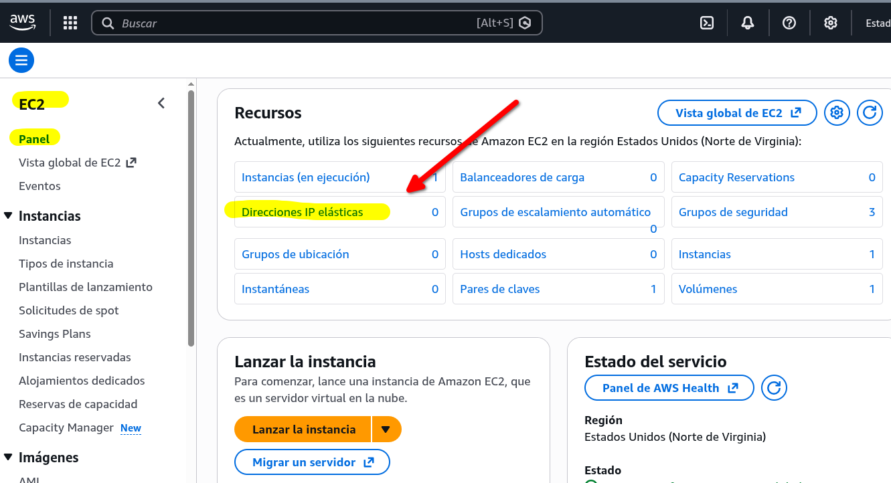
En ese panel está el botón de Asignar Dirección IP Elástica
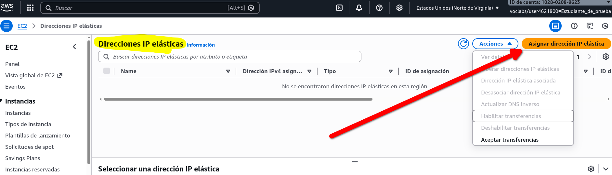
Al pulsarlo se abre un asistente. Deje las opciones por defecto y pulse "Asignar"
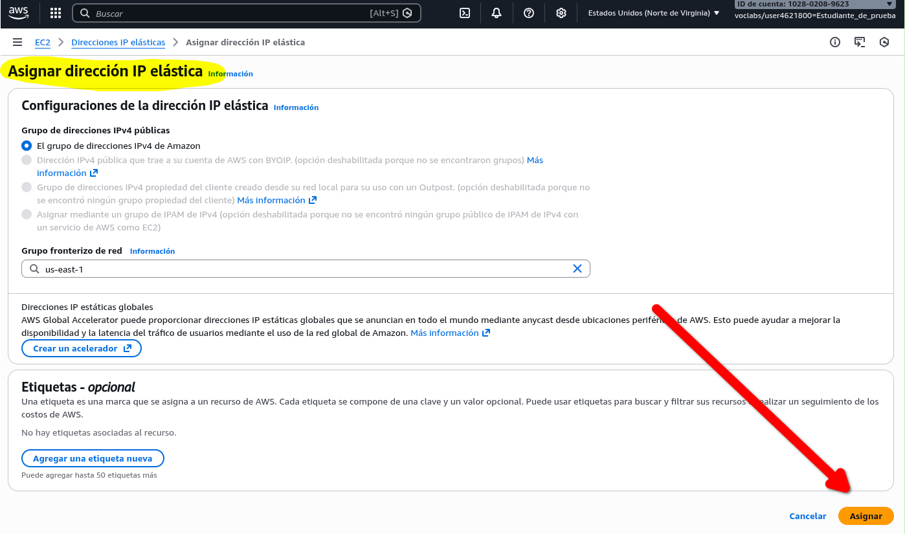
Y el resultado lo puede ver en la siguiente pantalla donde se le indica la IP pública asignada
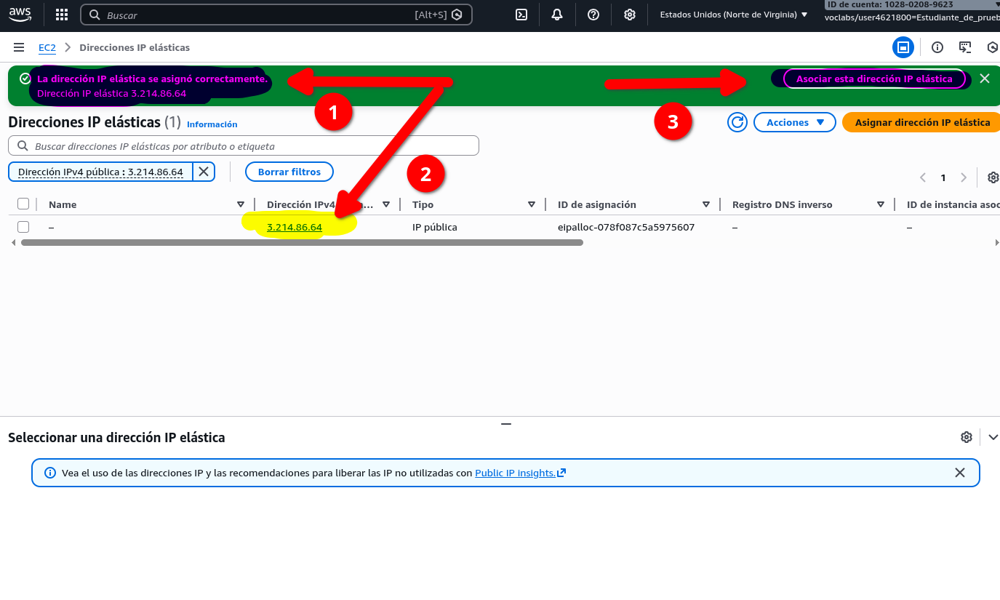
Asociar la IP a una instancia EC2¶
Puede hacerlo justo tras crear la IP eléstica, tiene la opción arriba a la derecha
Si pulsa el botón se muestra un asistente. Deje las opciones por defecto y sólo tiene que seleccionar la instancia a la que le quiere asignar esa IP:
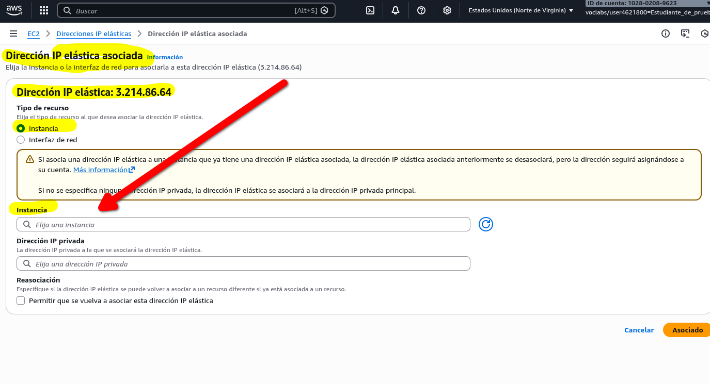
Introduzca su nombre o su id de instancia
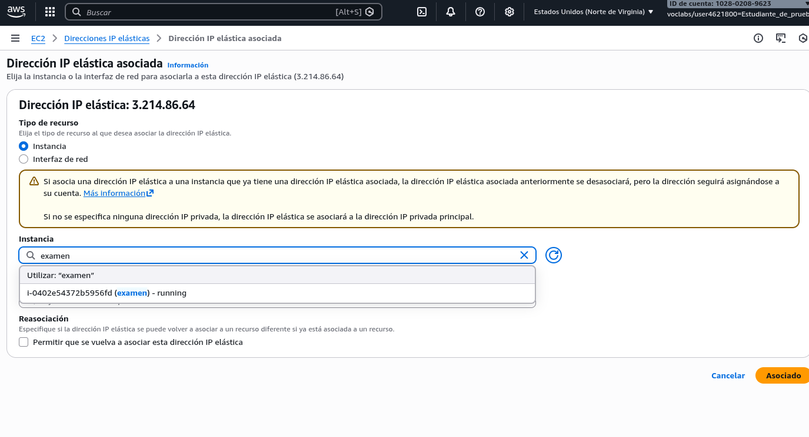
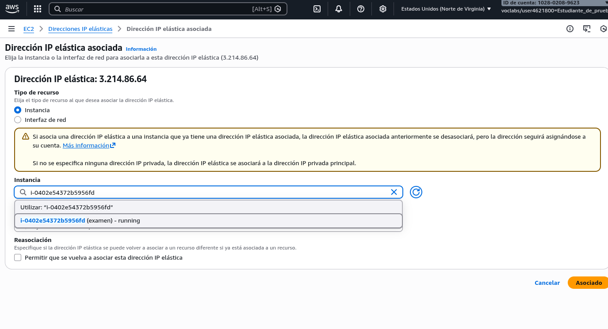
Una vez seleccioanda pulse el botón Asociar
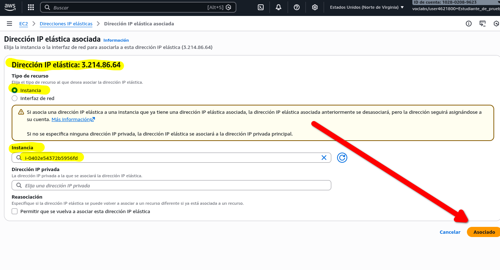
Y puede ver la asociación en el menú de IP elásticas
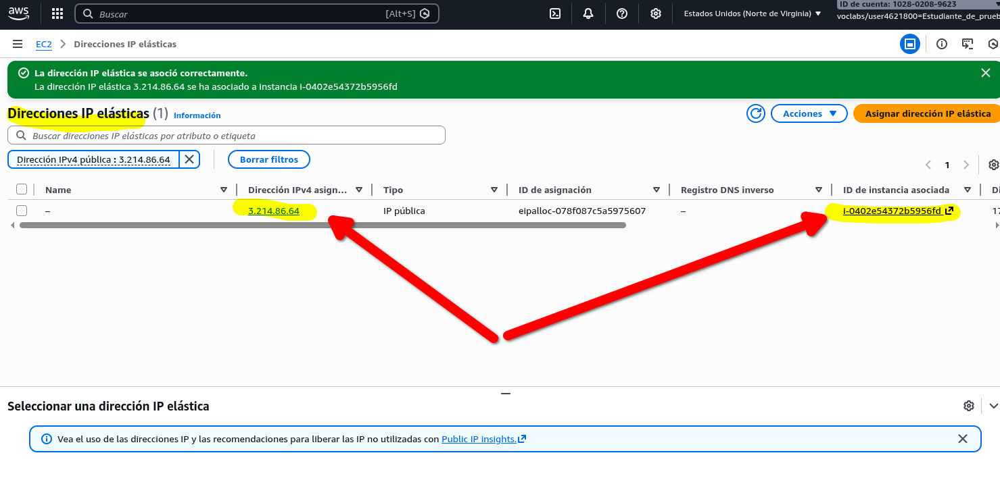
o en los datos de la instancia EC2
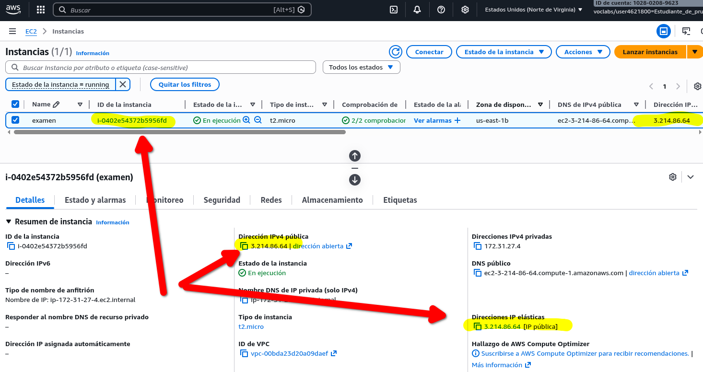
Eliminar asociación¶
Puede hacerlo desde las opciones de la instancia EC2 o desde la pantalla de gestión de las IP elásticas. En el caso que lo haga desde el panel de IP Elásticas tiene que seleccionar la IP, acceder al desplegable Acciones y usar la opción Desasociar dirección IP Elástica
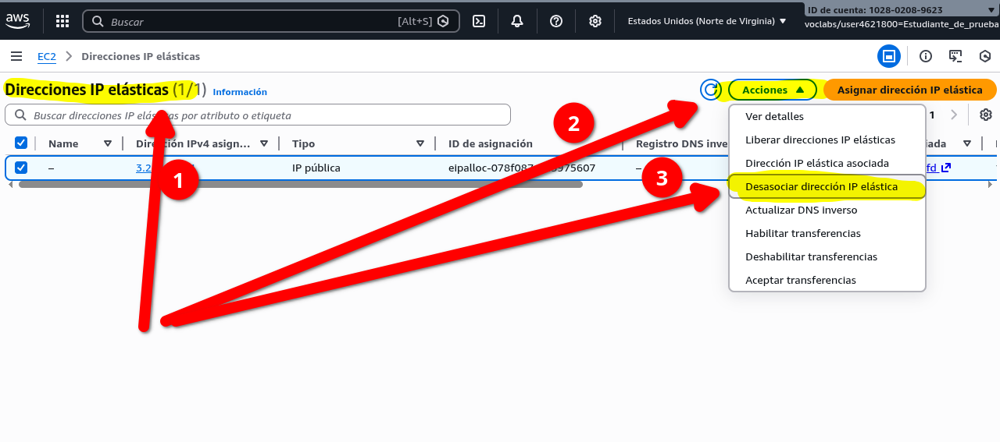
Pulsa el botón Desasociar
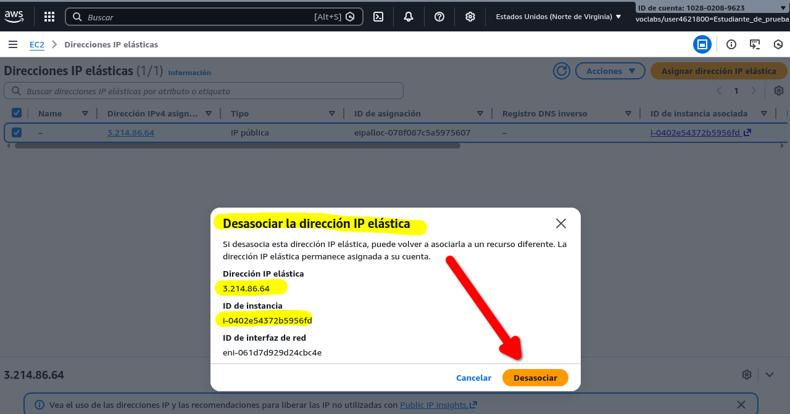
Y puede comprobar que la IP elástica ya no está asociada a la instancia.
En el panel de IPs Elásticas
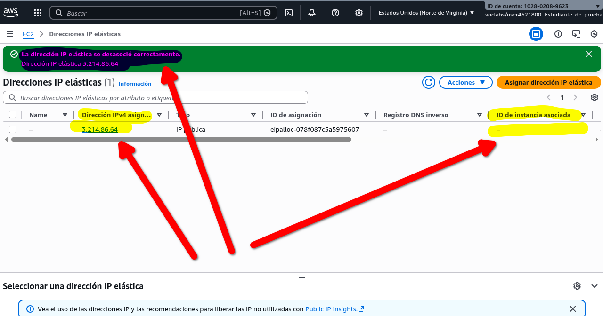
Liberar IP elástica¶
Puede liberar la IP elástica (a veces lo llaman Publicar). Eso evite el coste asociado.
Desde el panel de IP Elásticas selecciona la IP a Lineras, Acceda al Menú Acciones y selecciona la opción Liberar...
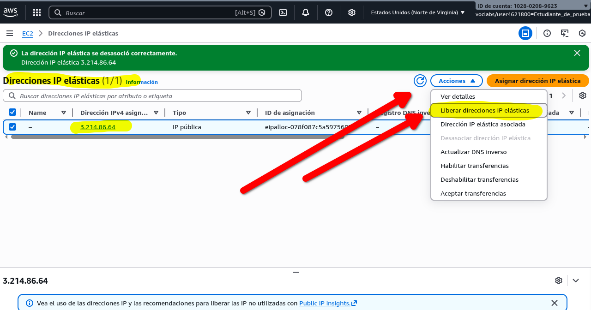
Le pide confirmación. Pulse el botón Publicar
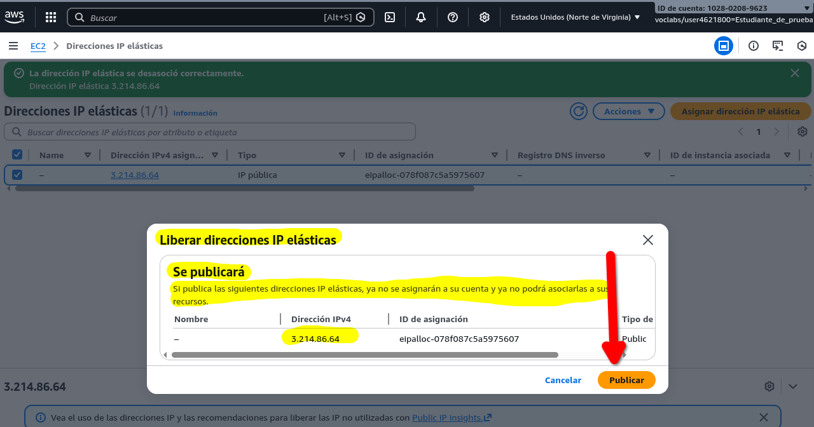
Tras pular se le indica con un mensaje que ha sido liberada u desaparece de la lista de IPs elásticas:
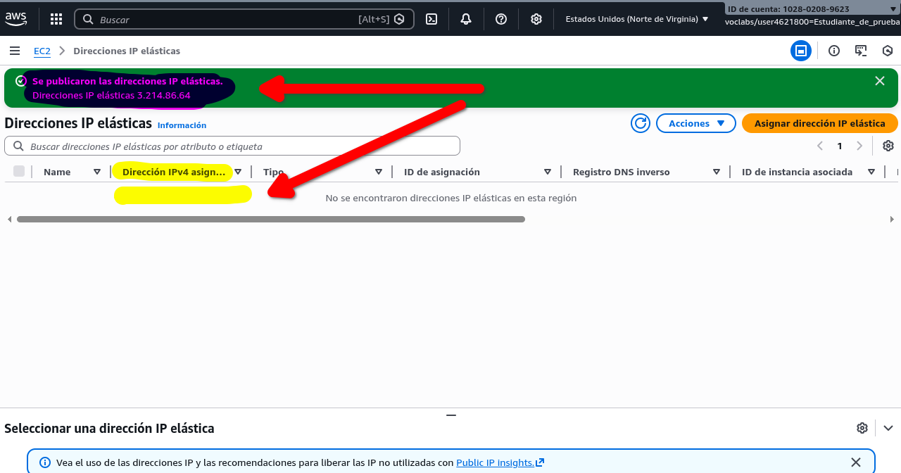
Puede comprobarlo también en el panel de información de la instancia EC2
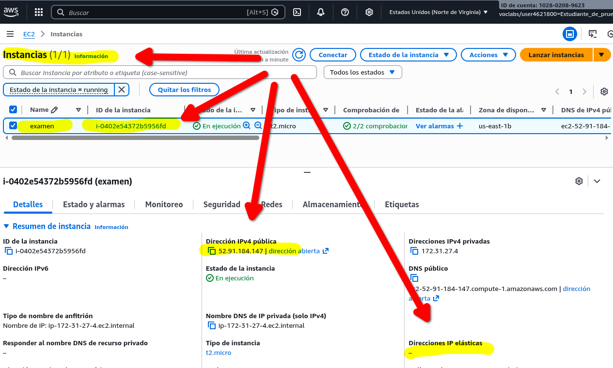